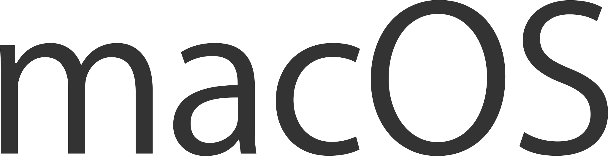
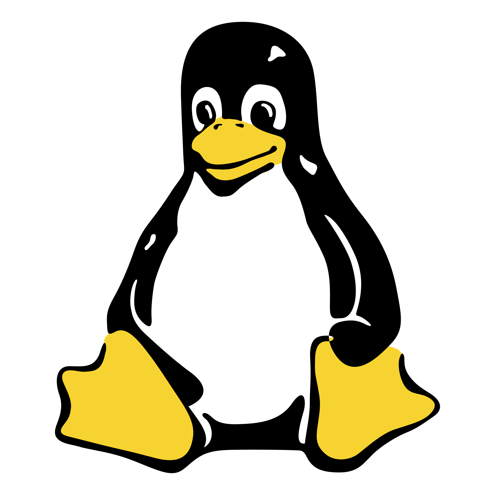
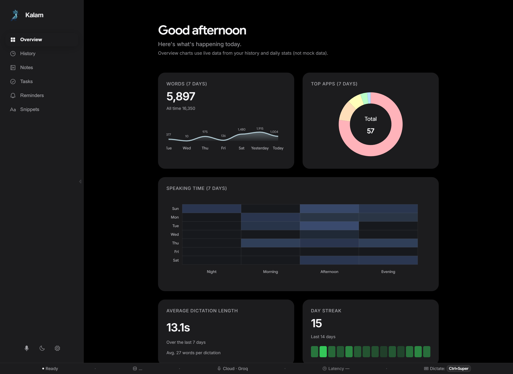
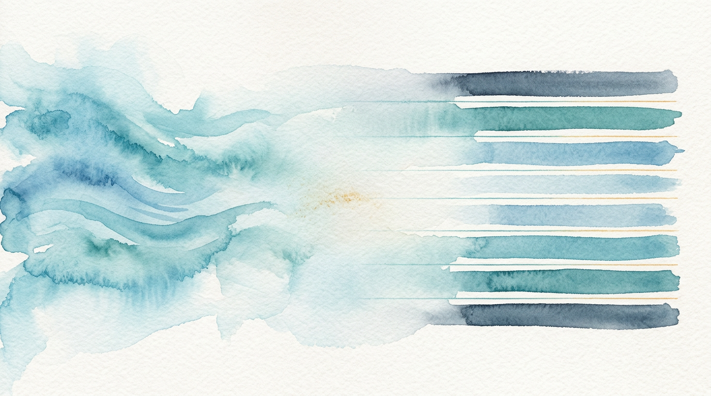
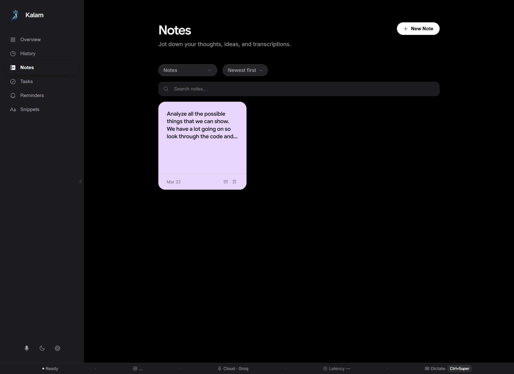
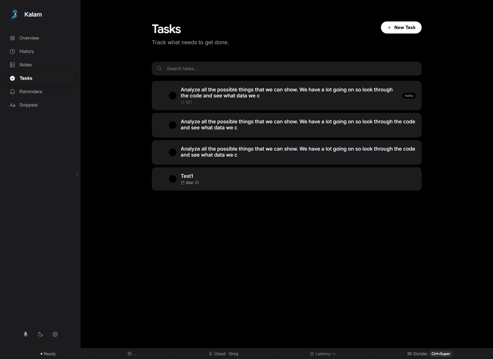
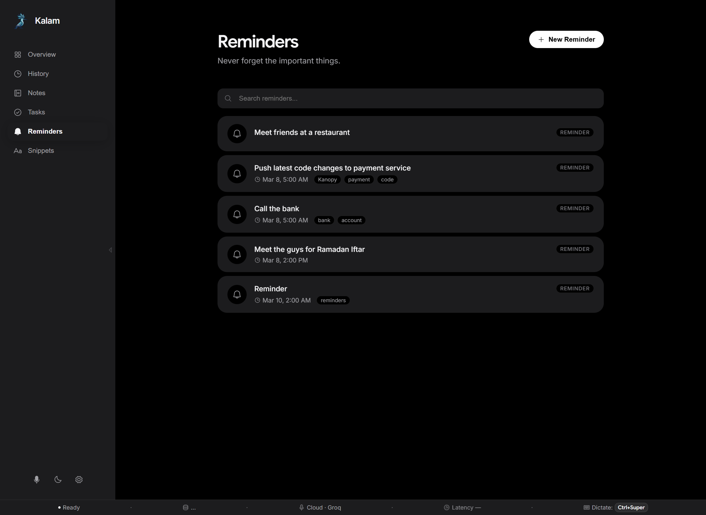
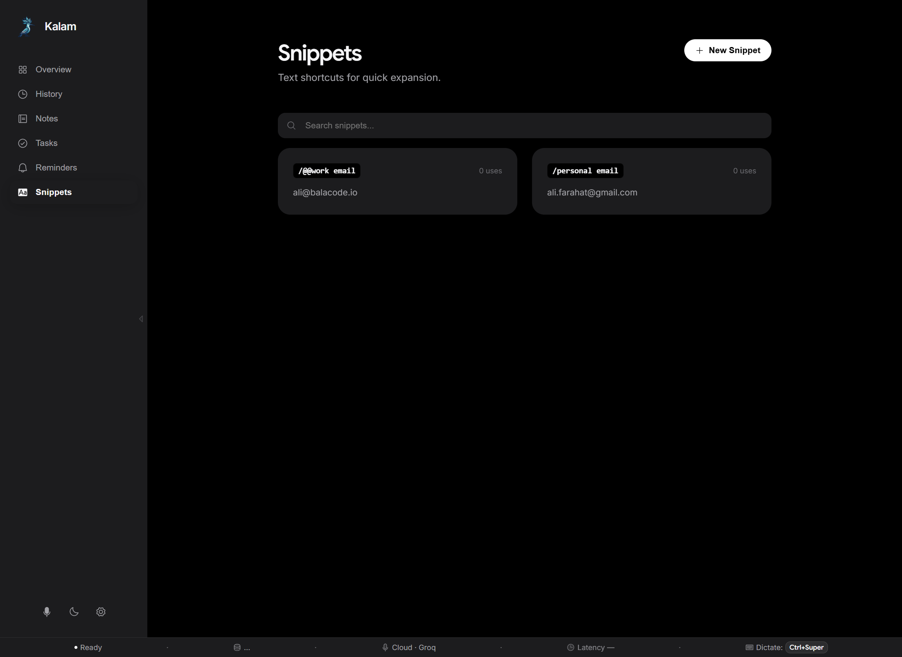
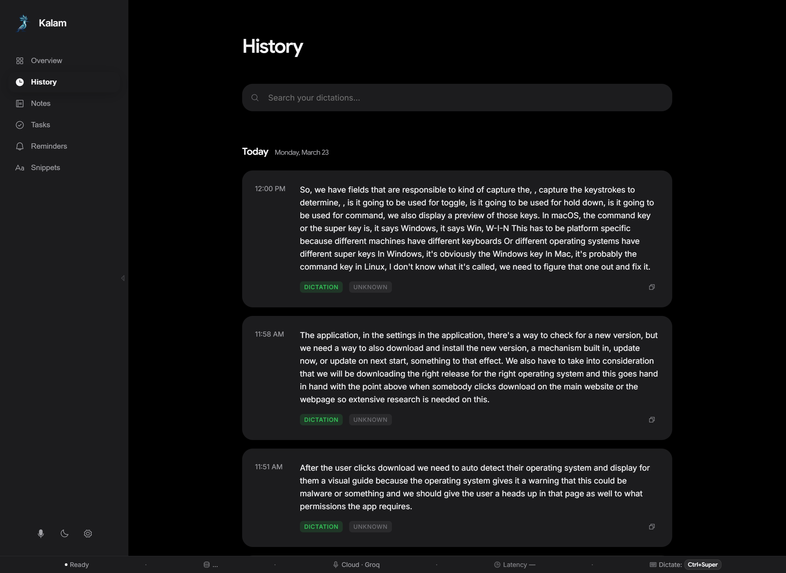
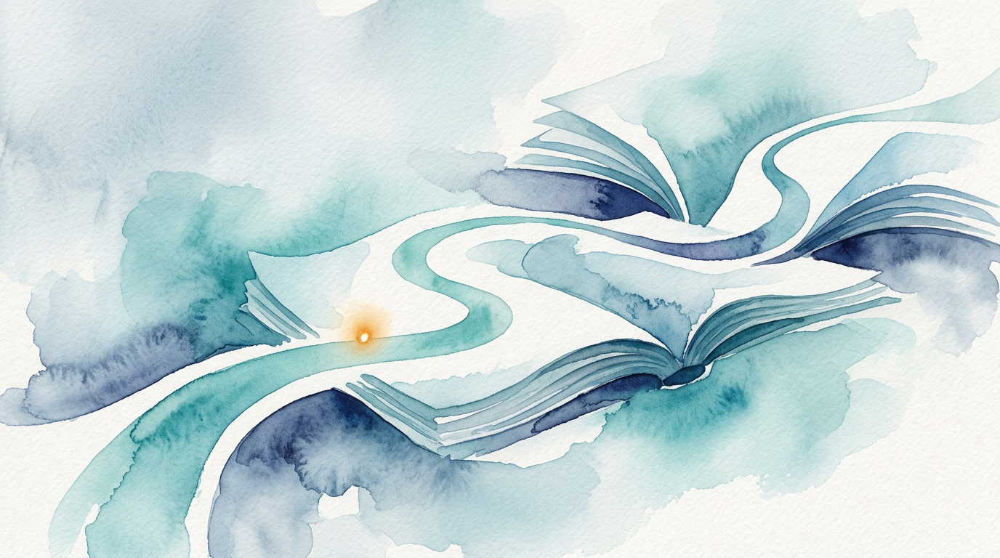

Speak.
It types.
Everywhere.
Free, open-source voice typing for your computer—Windows, Mac, and Linux. Types into any app the moment you speak.
No subscription, no lock-in. BYOK or fully offline—your audio stays yours.


Linux
Focus on what you say.
We'll handle the rest.
Features
Built to disappear into your workflow
Rust + Tauri: near-zero memory, instant startup, stays out of your way.

From voice to typed text—instantly
Your global hotkey brings Kalam forward over whatever you're working in: speak, release, and transcribed text lands in the focused field—without a full window taking over the screen.
Lightning-fast transcription
Speak up to 4× faster than typing. Text is injected into the active window the moment you release the hotkey.
Privacy first
Audio never touches disk. Use cloud (zero-retention TLS) or go fully offline—SenseVoice and Whisper.cpp run entirely on-device.
Dual-engine STT
Groq Whisper API for ultra-fast cloud, or SenseVoice / Whisper.cpp for completely on-device transcription. Switch any time in Settings.
Works in any app
One global hotkey—Ctrl+Win / Ctrl+Cmd—activates from anywhere. Email, Slack, VS Code, your browser: all of them.
Workspace
More than just dictation
Kalam is a complete voice-first workspace. Manage your whole day without touching the keyboard.
Smart notes
Capture fleeting thoughts. Tag, pin, color, and search your voice notes in a dedicated workspace.

Task management
Brain-dump to-dos by voice. Kalam organizes them into actionable checklists you manage later.

Voice reminders
Set reminders completely hands-free. Never lose a follow-up, meeting, or fleeting idea.

Text snippets
Say a short trigger phrase to instantly expand long templates or boilerplate—entirely by voice.

Local history & search
Everything you dictate is saved to an encrypted local SQLite database. Search past transcriptions, copy them, or promote them into notes and tasks—after the fact. Nothing leaves your device unless you choose cloud STT.

How it works
Three steps. That's it.
Press the hotkey
Hit Ctrl+Win (or Ctrl+Cmd on Mac) from any app. Kalam captures focus instantly.
Speak naturally
Talk at your normal pace. Kalam processes your voice instantly using advanced AI models—cloud or on-device.
Text appears
Transcribed text is typed directly into your active window. Ready to send, edit, or format.
Scroll right to see all columns →
Kalam is desktop only (Windows, macOS, Linux). Not building for Android or iOS. Sources: Wispr Flow, Otter.ai, Superwhisper.
FAQ
Common questions
Is Kalam free?
Yes. Open source and free. Use cloud transcription with your own API key (Groq has a free tier) or run fully offline—no subscription ever.
Is Kalam like Wispr Flow or Whisperflow?
Same idea—voice typing in any app. Kalam is free, open source, and runs on Windows, Mac, and Linux (desktop only). Wispr Flow is paid and covers mobile too.
What platforms does Kalam support?
Windows, macOS, and Linux (desktop only). We are not building for Android or iOS.
Does Kalam work offline?
Yes. SenseVoice or Whisper.cpp keeps everything on-device. No API key required for offline mode.
Do I need an API key?
Only for cloud transcription (e.g. Groq). Sign up at console.groq.com, get a free key, add it in Settings → STT Provider. Local mode needs no key.
Is my audio stored or sent somewhere?
Audio is never stored to disk (in-memory only). Cloud mode sends to the provider over TLS with zero retention. Local mode: nothing leaves your machine.
How do I start dictating?
Press Ctrl+Win (Windows) or Ctrl+Cmd (macOS), hold while you speak, then release. Text appears in whatever app had focus.

Documentation
Everything you need to get started
Setup guides, API key instructions, building from source, and a complete user manual—all on this site.
View documentation